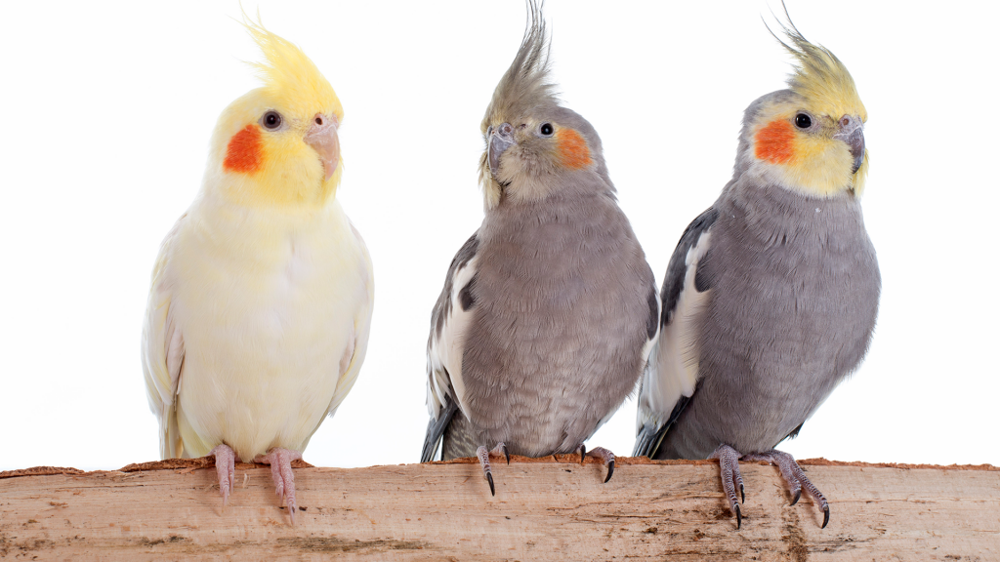

As calopstas são muito inteligente, comumente escolhido como pet pela habilidade de cantar, falare é realizar pequenos truques.
A medida de vida delas e de 10 a 15 anos, já as que vivem na natureza vivem 20 anos.
Não podem comer frutas com ácidesou doce,gordura por exemplo: abacaxi, limão, laranja, manga).
Silvestre: com corpo cinza escuro, cabeça amarela ou cinza.
Canela: que é parecida com Silvetre, mas com tons de cinza mais claro.
Lutino Cara Branca: que são consideradas uma das mais raras, são albinas, ou seja totalmente brancas.